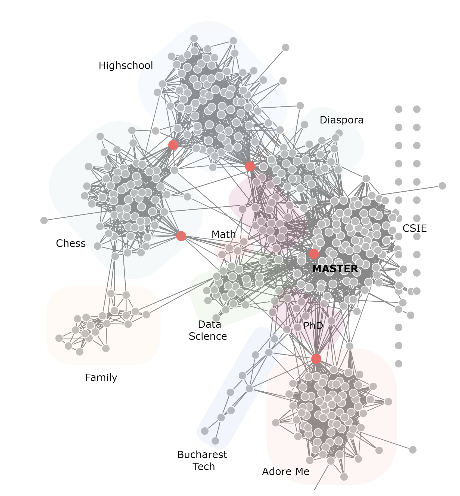
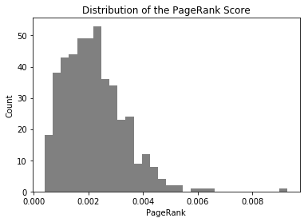
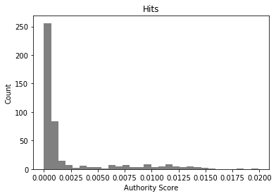
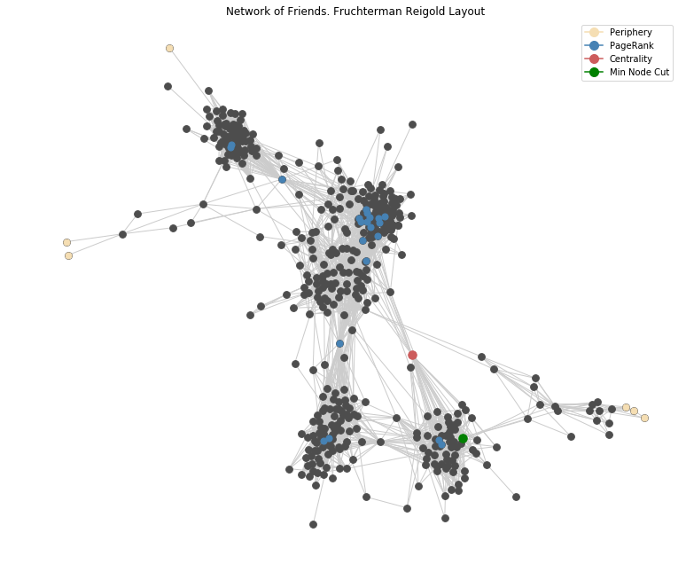
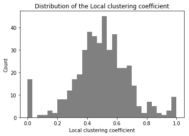
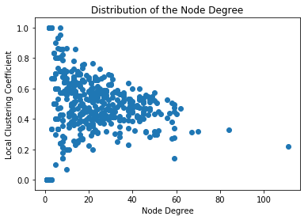
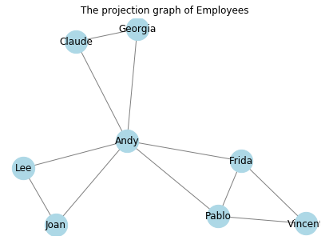
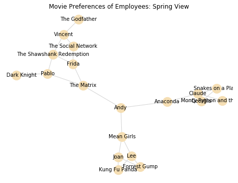

“The Future of Economics Uses the Science of Real-Life Social Networks” - PAUL OMEROD 1
The goal of this project is not to make a report or literature review or synthesis, rather to get some hands-on experience in working with Graphs and Network Data based on some classical and original (own) datasets and problems. It will involve both some theoretical understanding and programming. The outcome would be to get comfortable with this type of data and maybe build the ground for some future research.
On a second note, the focus will be not on depth, but on the breadth of applications and the philosophy is that “I don’t understand something unless I code it up”. Indeed, Graph Theory is a fascinating subject which I studied before, but as I found out, the understanding remains, but the skill perishes if left untrained or unused.
The third point is that the ideas from Network science can be extremely useful in the field of Machine Learning, as it “meshes” well with the class of models called Probabilistic Graphical Models 2, which represent random variables as nodes and the relationships between them as edges. The goal is given some data to infer the structure of the graph which can tell interesting insights about the phenomena at study.
Introduction by Example
 My Facebook Network of friends extracted though 3. The shadowed area over clusters represent different communities like the place I work at, chess, ASE and Moldavian diaspora. The red circles represent people connecting different communities or central figures for a given cluster.
In search of a suitable dataset for statistical analysis of social networks, I stumbled upon many interesting applications, from the classical Karate Club to Email, Citations of Scientific Articles, Transportation and Biology. Unfortunately, there is a tradeoff between how manageable it is to work with the data in terms of volume and how interesting are the patterns to be discovered. The most promising way seemed to explore the scientific literature or knowledge graphs like DBPedia, but it’s quite a difficult and heavy task.
This is why I extracted my own network of Facebook friends, because I knew there are a few heterogeneous communities and the results could be interesting. It turned out even more surprising and insightful when applying the algorithms for the layout and node importance. The immediate contribution is that this anonimized dataset can be used for teaching and academic purposes, testing of algorithms on graphs.
Moreover, it enables us to validate the results of algorithms with the actual knowledge of the communities and “important” people in it. First, I use the default visualization of the crawler and encode the knowledge I have about the network on the graph in the next page. Then, using python and networkx package try to visualize it, but this time by calculating importance metrics via PageRank, Hits, the central and peripheral nodes according to the definition.
The observation is that the overlap between statistical insights and “ground truth” is quite large. Because the network is real and not idealized, some “hubs”, i.e. people connecting different clusters aren’t identified. Instead, it finds important people within the clusters, and interpretation of this will be discussed later.
The first graph is quite complicated, so let’s review the communities which are clearly seen and shaded for clarity. The top cluster represents people from my highschool in Chisinau, Moldova. They are connected by a chess player to the quite large chess community of which I took part for many years. The chess cluster in turn is connected to my family, which joined later and are also interested in this game.
Moreover, the network doesn’t have timestamps, but hypothetically, if I had them, I could tell how the network developed to its final state. It is by no means an impediment of telling the story. We can move on to the times I moved to Bucharest for CSIE bachelor, and we see within the central, big cluster several sub-communities, the first one being the foreign students, with which other foreign students, of course interact a lot. The second part, people from university are pretty much the same during the Bachelor and Masters. The person connecting the highschool, diaspora and university is my roommate and chess with CSIE a grandmaster who is also a professor.
Another source of connections are different conferences, summer schools and workshops, for example in Risk Management, Mathematics and Data Science. These nodes are not differentiated too well in the network, but the fact that the algorithm placed them in the same neighborhood is very insightful. Inside the Cybernetics Masters’, the red point, also confirmed by PageRank is the most central person, the chief of students’ senate.
Moving next, we see a sparsely connected region of PhD students and Teaching Assistants. They, and the Cybernetics cluster are connected to the firm I’m working with by a professor who was a consultant at our firm. The last community is the Bucharest Machine Learning and Tech people, who use to be very active in meetups and conferences inside the capital.
Now we are armed with the knowledge and interpretation of this graph and
can start with a blank slate, using the raw data, which is stored in a
json format {’source’: 476, ’target’: 87}, later transformed in an
edge list and finally a networkx Graph() object. Now we can
visualize this object in python, using different layout algorithms,
calculate statistics and starting exploring the dataset as if we knew
nothing about it. The node labels are numbers in order to anonimize the
data, without much loss of insight.
import numpy as np
import matplotlib.pyplot as plt
import pandas as pd
import json
import networkx as nx
from pprint import pprint
%matplotlib inline
with open('bizovi.json', 'rb') as f:
data = json.load(f)
df = pd.DataFrame([(x["source"], x["target"]) for x in data["links"]],
columns=["n1", "n2"])
df.head()
G = nx.from_pandas_edgelist(df, 'n1', 'n2')
Classical measures of centrality like degree, average clustering, betweenness centrality, despite their simplicity and power they all have the downside of how complex of patterns can they represent or suggest. This is where iterative, algorithmic approaches like Scaled PageRank and HITS come into play. The first one can be interpreted as the probability of ending up in a node when traversing the graph by a random walk a sufficiently long time. Hits uses another approach with the concepts of Authority and Hubs. It is important to note that they both were developed for directed graphs in the context of web pages and hyperlinks pointing to them and they show their full power there. Nonetheless, they can still be used for undirected graphs, as I did here.
_ = plt.hist(nx.pagerank(G).values(), bins=30, color='.5')
plt.xlabel("PageRank")
plt.ylabel("Count")
plt.title("Distribution of the PageRank Score")
plt.show()
pagerank = nx.pagerank(G, alpha=0.8)
high_rank = [key for key, val in pagerank.items() if val > 0.0042]
hits = nx.hits(G, max_iter=1000)
_ = plt.hist(hits[0].values(), bins=30, color='.5')
plt.xlabel("Authority Score")
plt.ylabel("Count")
plt.title("Hits")
plt.show()
high_hits = [key for key, val in hits[0].items() if val > 0.005]
First, I apply the algorithms and then look at the distribution of node
“importance” in order to identify a good treshold for the visualization.
The important nodes are then stored into high_rank and high_hits
variables. The parameter alpha is essential for the PageRank not to
get stuck into loops and distorting the distribution.


The distribution of node importance according to PageRank and Hits algorithms. HITS needed a much larger number of iterations to converge and is much more strict in what it considers to be important nodes, most of them being concentrated around zero. For this particular network, PageRank scores seem a bit more sensible overall, but HITS differentiates better between importance.
As a further warm-up, let’s calculate a few statistics on this graph, which interpretation we will discuss later. The two statistics which can vary greatly in conclusions by network type, in this case pretty much agree: the average clustering (0.49) and transitivity (0.45). The central and peripheral nodes will be displayed directly on the graph. The diameter of the network is 8, radius is 4 and the average shortest path between any node to other node is 3.26.
periphery = nx.periphery(G)
center = nx.center(G)
min_node_cut = nx.minimum_node_cut(G)
nx.average_clustering(G), nx.transitivity(G)
print(nx.average_shortest_path_length(G))
print(nx.diameter(G))
Now it is time to visualize the network and add the nodes which were calculated above according to criteria of importance. It is important to note that networkx is NOT primarily a visualization of network package: it uses the standard matplotlib, but it is good enough for small networks such as this one. In just 12 lines of code we get a publication-ready visualization. For more advanced use-cases graphviz and Gephi, igraph in R can be more suitable. In the next part, these repetitive operations will be wrapped up in a generic function which automates this a little bit painful process.
np.random.seed(3245)
legend_elements = [Line2D([0], [0], marker='o', color='wheat',
markersize=10, label='Periphery'),
Line2D([0], [0], marker='o', color='steelblue',
label='PageRank', markersize=10),
Line2D([0], [0], marker='o', color='indianred',
label='Centrality', markersize=10),
Line2D([0], [0], marker='o', color='green',
label='Min Node Cut', markersize=10)]
plt.figure(figsize=(13, 11))
plt.axis("off")
plt.title("Network of Friends. Fruchterman Reigold Layout")
pos = nx.fruchterman_reingold_layout(G)
nx.draw_networkx(G, node_color=".3", pos=pos, node_size=60,
with_labels=False, edge_color=".8")
nx.draw_networkx_nodes(periphery, pos=pos,
node_color='wheat', node_size=50)
nx.draw_networkx_nodes(high_rank, pos=pos,
node_color='steelblue', node_size=50)
nx.draw_networkx_nodes(center, pos=pos,
node_color='indianred', node_size=90)
nx.draw_networkx_nodes(min_node_cut, pos=pos,
node_color='green', node_size=90)
plt.legend(legend_elements, ["Periphery",
"PageRank", "Centrality", "Min Node Cut"])
plt.show()

The final result of applying classical algorithms turned out extremely close to the ground truth, i.e. the interpretation I gave in the beginning
The network is reversed, but even cleaner than the one generated by lostcircles. We can see on the graph on the next page that the periphery is not that large as expected. Three, or even four important people who connect clusters are correctly identified either by centrality or PageRank algorithm. Moreover, it identifies very well connected people inside the clusters.
For the minimal node cut there are multiple choices, but it seems that the algorithm “thinks” that the family is the most poorly connected cluster to the other ones, which, looking at the picture is absolutely reasonable, as we have to remove only one node to achieve a disconnection, the green one.
One a side note, good graph datasets for teaching are relatively rare, and with closure of Facebook API and LinkedIn API, researchers working with network data may stick with the old datasets. This one seems interesting enough for tutorials and projects.
A few comments on what the code does: first it sets up the environment,
defining the size of the picture and deleting the axis, then it
calculates the position of each node by the Fruchterman Reigold
Algorithm. The first layer of grey nodes is added, together with all of
the connections. Then the peripheral nodes calculated above are
displayed in beige with the function nx.draw_networkx_nodes, which
also requires the position, the Centrality, Minimum Cut and PageRank are
added in turn. The finishing touch is the legend.
The last two obvious things to try are calculating the Local Clustering Coefficient and seeing the correlation between Node degree and LCC. We see that the first follows a pretty symmetric distribution, with exception of the stack at zero, which is expected in such a network. It means that there are nodes which are highly clustered and some not at all, but the majority at around 0.5.
The correlation with the Node Degree shows that as node degree increases, the expected LCC drops. This relationship is usually visualized at a log scale, but our network is not enough for this to be necessary and for the pattern to emerge. There is also an interesting boundary on the top of the point cloud. Remember how we calculated the average clustering above (0.49) and it agreed in large with the alternative method of transitivity, which is based on the concept on “triangle closure”. It means that networks, in which pairs of 2 out of 3 nodes are connected, tend to “produce” closures within those triplets.

 Two classical measures of clustering
Below is the code which uses list comprehensions and nx functions on the graphs in order to compute and plot the distributions of the degree and LCC.
_ = plt.hist(list(nx.clustering(G).values()), bins=30, color='.5')
plt.xlabel("Local clustering coefficient")
plt.ylabel("Count")
plt.title("Distribution of the Local clustering coefficient")
plt.show()
plt.scatter([x[1] for x in list(nx.degree(G))],
list(nx.clustering(G).values()))
plt.xlabel("Node Degree")
plt.ylabel("Local Clustering Coefficient")
plt.title("Distribution of the Node Degree")
plt.show()
# Bonus: Node degree distribution
_ = plt.hist([x[1] for x in list(nx.degree(G))], bins=30, color='.5')
plt.xlabel("Node Degree")
plt.ylabel("Count")
plt.title("Distribution of the Node Degree")
plt.show()
Exploratory Data Analysis of Classical Network Datasets
There are numerous articles and courses which discuss the theory behind the measures and algorithms I used in the previous section, so the reader is encouraged to look them up in the bibliography. In order to keep the spirit of this project as a tutorial and storytelling, let’s move on to other applications, mainly from the business and research fields.
Here we will have the chance to develop in more depth the programming skills on smaller dataset, which is a better strategy for learning. However, I wanted to show the “big” example first, for the most exciting stuff, to see what is possible to do and only then learn the skill.
Bipartite Graphs and Recommender Systems
There is an important subclass of graphs, called bipartite graphs which are extremely useful in Recommender Systems. It consists of two sets of nodes $\mathbf{V}=(L, R)$ with no edges between the nodes within each set, but with ${ E(u, v) : u \in L , v\in R }$. If we view the sets as users and products/items or fans and teams the edges can represent preferences or affiliations. From this point the Machine Learning and Recommender System goes into a direction orthogonal to ours. What we will do in the following simple example is to find projections of users and items which would indicate us the similarity between them.
 A bipartite graph of movies and users
A bipartite graph of movies and users
The following toy example is given as an exercise to the Coursera course on Applied Social Network Analysis in Python. 4 It represents different users and the movies they prefer. For the ones willing to go through it an important warning is that it was build with the networkx 1.x API, which is largely incompatible with 2.x (current version), which means that almost all of the code and serialized data is broken. I have rewritten everything with respect to the latest version, which will be the one officially maintained.
Taking the projection of a bipartite graph means having an edge between “users” or “movies” when the two nodes have the connection with the same counterpart. The weights on the edges will be given by the number of overlaps (i.e. common movies both “Lee” and “Joan” liked). I display below both views, in the user space and item space. As the underlying file has an unfortunate format for loading, I declare this small network directly in Python.
  The projection of the bipartite graph between users and movies.
import networkx as nx
import pandas as pd
import numpy as np
from networkx.algorithms import bipartite
import matplotlib.pyplot as plt
employees = set(['Pablo', 'Lee', 'Georgia', 'Vincent',
'Andy', 'Frida', 'Joan', 'Claude'])
movies_list = set(['The Shawshank Redemption', 'Forrest Gump',
'The Matrix', 'Anaconda', 'The Social Network',
'The Godfather', 'Monty Python and the Holy Grail',
'Snakes on a Plane', 'Kung Fu Panda', 'The Dark Knight',
'Mean Girls'])
We discussed earlier the need to write a function which will automate the beautiful drawing of small graphs, as the defaults given by networkx are dreadful. A random seed is also used to ensure reproducibility of the graph. The last feature is having an option to draw bipartite graphs automatically, as networkx will choose another layout, not so suitable for drawing bipartite graphs. The projection is given by a submodule networkx.algorithms.bipartite.
def clean_drawing(graph, title="", bipart=False, node_color="wheat",
edge_color="grey", font_size=10, node_size=330,
seed=1245, figsize=(7,5)):
np.random.seed(seed)
_ = plt.figure(figsize=figsize)
_ = plt.plot()
pos = nx.spring_layout(graph)
for spine in plt.gca().spines.values():
spine.set_visible(False)
_ = plt.tick_params(top='off', bottom='off', left='off',
right='off', labelleft='off', labelbottom='off')
if bipart==False:
_ = nx.draw_networkx(graph, node_size=node_size, pos=pos,
node_color=node_color, edge_color=edge_color,
font_size=font_size)
else:
X, Y = bipartite.sets(graph)
pos = dict()
pos.update( (n, (0.8, i)) for i, n in enumerate(X))
pos.update( (n, (1.5, i)) for i, n in enumerate(Y))
_ = nx.draw_networkx(graph, node_size=330, pos=pos,
node_color=node_color, edge_color=edge_color,
font_size=font_size)
_ = plt.xlim((0.5, 2))
_ = plt.title(title)
plt.show()
movies = [("Andy", "Anaconda")
, ("Andy", "Mean Girls")
, ("Andy", "The Matrix")
, ("Claude", "Anaconda")
, ("Claude", "Monty Python and the Holy Grail")
, ("Claude", "Snakes on a Plane")
, ("Frida", "The Matrix")
, ("Frida", "The Shawshank Redemption")
, ("Frida", "The Social Network")
, ("Georgia", "Anaconda")
, ("Georgia", "Monty Python and the Holy Grail")
, ("Georgia", "Snakes on a Plane")
, ("Joan", "Forrest Gump")
, ("Joan", "Kung Fu Panda")
, ("Joan", "Mean Girls")
, ("Lee", "Forrest Gump")
, ("Lee", "Kung Fu Panda")
, ("Lee", "Mean Girls")
, ("Pablo", "The Dark Knight")
, ("Pablo", "The Matrix")
, ("Pablo", "The Shawshank Redemption")
, ("Vincent", "The Godfather")
, ("Vincent", "The Shawshank Redemption")
, ("Vincent", "The Social Network")]
G = nx.Graph(movies)
clean_drawing(G, seed=155, bipart=True,
title = "Movie Preferences of Employees: Bipartite View",
edge_color="lightgrey", figsize=(8, 6))
clean_drawing(G, seed=1215, title = "Movie Preferences of Employees",
edge_color="lightgrey", figsize=(8, 6))
P = bipartite.projected_graph(G, bipartite.sets(G)[0])
clean_drawing(P, node_size=800, font_size=12,
seed=124, node_color="lightblue",
title = "The projection graph of Employees")
Q = bipartite.projected_graph(G, bipartite.sets(G)[1])
clean_drawing(Q, node_size=800, font_size=12, seed=539, figsize=(8, 6),
title = "The Projection Graph of Movies")
Research, Citations and Ontologies
The techniques and algorithms applied on these toy examples can be and have been successfully used in discovering patterns of citation networks for research pages, knowledge graphs, blogs and web pages. It turns out to be an extremely important tool for discovery and even recommendation, as a researcher or reader has limited time and capacity, it is reasonable to suggest the most relevant or important research on her topic.
Also, papers which do meta-analyses, combined with Natural Language Processing techniques are extremely interesting, as they attempt to draw the landscape of research, opinions and topics. It can also be applied to News in real time, which was successfully accomplished by Marko Grobelnik and his group in Slovenia.
Conclusions
As a data scientist/ machine learning researcher it was useful to step outside the (statistical) approaches on cross-sectional and panel data with which we usually work and explore applications driven by the network data.
We looked at a fun and practical example of analysing a network of friends by applying some classical algorithms on it, managing to characterize quite a large part of its features and structure. A future area of improvement and research would be to see how such networks evolve in time, by enriching the data with timestamps of friendship requests acceptance. In this process, I learned a lot about practical statistical analysis of graph data and hope to pass this hands-on experience to the readers.
References
- Paul Omerod The Future of Economics Uses the Science of Real-Life Social Networks (Evonomics, 2016) ^
- Zoubin Ghahramani Probabilistic Models of Networks and other Relational Data (NIPS Workshop on Social Networks, 2012) ^
- Lostcircles.com A scraper for Facebook friend network (Lostcircles, 2017) ^